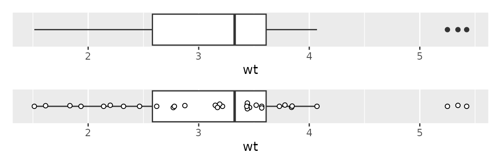

About Graphics
graphics.RmdMost of the graphical functions we will use come from the
ggplot2 package, though this package does have a few
additions, including geom_beeswarm,
scale_y_binary, geom_smooth_logistic, and
hide_y_axis. See https://ggplot2.tidyverse.org/ for a full reference to
the ggplot2 package.
The ggplot2 library uses a “grammar of graphics” to
specify the aspects of a plot. The primary idea is that one first
specifies a data set that, then maps variables from that data set to a
specific aesthetic attributes of the plot, and then chooses which
geometric objects to display. The plot can also optionally be facetted
by other variables, have the scales or labels changed, and more.
The following pseudo-code plots data from a data set
data_set, and maps the variable x_var to the
x aesthetic, y_var to the y
aesthetic (more as needed), and then adds a geometric object
(XXX); these could be points, lines, or bars. You can then
optionally facet the plot, change the scales, change the labels, and
more.
ggplot(data_set,
mapping=aes(x=x_var, y=y_var, fill=fill_var, color=color_var)) +
geom_XXX() +
facet_XXX() +
scale_XXX() +
labs(...)The syntax can vary in a number of ways; one common variation is to
add the aesthetic mapping instead of using the mapping
parameter, like this.
ggplot(data_set) +
aes(x=x_var, y=y_var, fill=fill_var, color=color_var) + ...Combining plots
The patchwork package allows one to combine together
several plots from ggplot using the mathematical operators
of + (for side by side) and / (for above and
below). For more control, see the package
documentation.
I’ll use this functionality in this document to display several examples side by side.
Scatterplots
With numeric variables mapped to both x and
y, using geom_point will give a scatterplot;
mapping a categorical variable to color will color the
points by that variable.
One can plot on the log scale by adding scale_x_log10()
or scale_y_log10().
plot1 <- ggplot(mtcars2) + aes(x=wt, y=mpg) + geom_point()
plot2 <- ggplot(mtcars2) + aes(x=wt, y=mpg, color=gear) + geom_point()
plot3 <- plot1 + scale_x_log10() + scale_y_log10()
plot1 + plot2 + plot3One can also facet by a categorical variable; use the
optional labeller parameter to include the variable name in
the label.
ggplot(mtcars2) + aes(x=wt, y=mpg) + geom_point() +
facet_wrap(~gear, labeller = label_both)
One can also add a smooth to the plot using stat_smooth.
By default, this is allowed to bend with the data and includes a 95%
confidence region. To use a linear fit, use method="lm",
and to exclude the confidence region, use se=FALSE. Here
two smooths, one of each type, are added to the plot.
ggplot(mtcars2) + aes(x=wt, y=mpg) + geom_point() +
stat_smooth(method="lm") +
stat_smooth(se=FALSE)
Bar plots
Bar plots show the count of each level of a categorical variable; no
y variable is needed as the count is computed.
Use geom_bar for a single bar for each level of the
desired variable, use the fill aesthetic to color the
portion of each bar by another variable, and use geom_bars
to put these bars side by side.
Use scale_y_continuous with the breaks or
limits parameters to change the tick locations or
lower/upper limits.
These plots can also be faceted as desired.
plot1 <- ggplot(mtcars2) + aes(x=gear) + geom_bar()
plot2 <- ggplot(mtcars2) + aes(x=gear, fill=cyl) + geom_bar()
plot3 <- ggplot(mtcars2) + aes(x=gear, fill=cyl) + geom_bars() +
scale_y_continuous(breaks=c(0,5,10,15), limits = c(0, 15))
plot1 + plot2 + plot3
Histograms and Density Plots
These plots also only need an x mapping; the
y will be computed appropriately.
- Use
geom_histogramto make a histogram; use parametersbinwidthandboundaryto control the bins. - Use
geom_densityto make a density plot; use thecoloraesthetic to do separately by another variable.
These plots can also be faceted as desired.
plot1 <- ggplot(mtcars2) + aes(wt) + geom_histogram(binwidth=0.25, boundary=0)
plot2 <- ggplot(mtcars2) + aes(wt) + geom_density()
plot3 <- ggplot(mtcars2) + aes(wt, color=cyl) + geom_density()
plot1 + plot2 + plot3
Boxplots
To make a boxplot, use geom_boxplot(); usually this has
a continuous y and a categorical x.
However, one can flip x and y to plot
horizontally, and if one wants a boxplot for just a single continuous
variable, say var, use x=var, y=0 to plot
horizontally, and add hide_y_axis().
Boxplots can hide information, so it’s nice to add points on top of the boxplot. To do so,
- first turn off outliers using
geom_boxplot(outlier.shape = NA) - then add swarmed points with
geom_beeswarm; use thespacingparameter to control the swarm; using the parameterspch=21andfill="white"also help to make the swarm more apparent
These can be facetted or put on the log scale, as described above.
plot1 <- ggplot(mtcars2) + aes(x=wt) +
geom_boxplot() +
hide_y_axis()
plot2 <- ggplot(mtcars2) + aes(x=wt, y=0) +
geom_boxplot(outlier.shape = NA) +
geom_beeswarm(spacing=3, pch=21, fill="white") +
hide_y_axis()
plot1 / plot2
plot1 <- ggplot(mtcars2) + aes(x=cyl, y=wt) +
geom_boxplot()
plot2 <- ggplot(mtcars2) + aes(x=cyl, y=wt) +
geom_boxplot(outlier.shape = NA) +
geom_beeswarm(spacing=2, pch=21, fill="white")
plot1 + plot2
Logistic Regression plots
For a logistic regression, where the response variable
(y) is binary, and the explanatory variable
(x) is numeric, use geom_beeswarm so that
points don’t overlap, and specify orientation="y" so that
they swarm in the right direction.
Additionally, use scale_y_binary to put the response on
a 0-1 proportion scale, and optionally add a smooth using
geom_smooth_logistic. For reasons I don’t understand, you
also need the aesthetic group=1 for the smooth to work
properly.
You can map a variable to the color aesthetic to color
the points and do the smooth by another variable; if you do, set
group to be the same variable as color.
ggplot(mtcars2) + aes(x=wt, y=vs, group=1) +
geom_beeswarm(orientation="y", spacing=2) +
scale_y_binary() +
geom_smooth_logistic()Estimates with error bars
Sometimes one wishes to show summary information in a plot. Here I’ll calculate the mean weight, and standard error, by the number of cylinders.
To show the value as a bar, use geom_col; this is
similar to geom_bar except we are specifying the height of
the bar instead of having R compute the count.
To show error bars, use geom_errorbar and map values to
the aesthetics ymin and ymax. These can be
computed within the plotting function, as is here. The
width parameter controls with width of the bars (left to
right).
Bars like this are somewhat frowned upon in many fields for a number of reasons we may discuss. (This is especially true if the error bar just goes above the height of the bar; note that these go both above and below).
So it is generally preferred to use points with error bars, and it
can be nice to add the points too, so that one can see the spread of the
data as well. To do that we’ll use geom_point for the mean,
as in a scatterplot (though changing the parameter size to
make it stand out), and geom_beeswarm for the data
points.
However, we do need to use a syntax variant, as we want the error bar
and mean point to use variables from wt_mse, and we want
the beeswarm to use data from mtcars2. Additionally, the
variable for the y aesthetic differs in these two data
sets. To accomplish this, we specify only the aesthetics that apply to
all in the main aes, and use additional aes
functions within the appropriate geom’s. And while we also
specify the wt_mse as the data set, as before, we overrule
this in geom_beeswarm by specifying a new data set
there.
plot1 <- ggplot(wt_mse) + aes(cyl, m, ymin=m-se, ymax=m+se) +
geom_col() +
geom_errorbar(width=0.5)
plot2 <- ggplot(wt_mse) + aes(x=cyl) +
geom_errorbar(aes(ymin=m-se, ymax=m+se), width=0.3) +
geom_point(aes(y=m), size=2) +
geom_beeswarm(aes(y=wt), data=mtcars2, pch=21, fill="white")
plot1 + plot2
Labels
To change labels, use the labs function, and specify the
label for the particular aesthetic you want to label differently.
Additionally, one can add a title and a
subtitle.
ggplot(mtcars2) + aes(x=gear, fill=cyl) +
geom_bar() +
labs(x="Number of gears",
y="Count",
fill="Num. Cylinders",
title="Count of car models, by gears and cylinders")Resizing plots in Quarto
To resize a plot in Quarto output, use the fig-width and
fig-height options at the top of the chunk. The default
size is usually about 6 by 6. One usually has to use trial and error to
determine the best height and width.
This is also the easiest way to change the size of the text in a plot; when a plot is made larger, the text stays the same size, so is smaller relative to the rest of the plot.
#| fig-width: 5
#| fig-height: 4Saving plots
To save a plot as a separate file, first assign the plot to a
variable name and then use ggsave, specifying the filename,
and optionally the width and height.
Filetype options include pdf, tiff, and png; for tiff and png, the
dpi parameter may be helpful to control the resolution, and
for tiff, compression="rle" should help with the file
size.
As with reading data, using here is recommended.
myplot <- ggplot(mtcars2) + aes(x=wt, y=mpg) + geom_point()
ggsave(myplot, filename=here("myplot.pdf"), width=6, height=6)